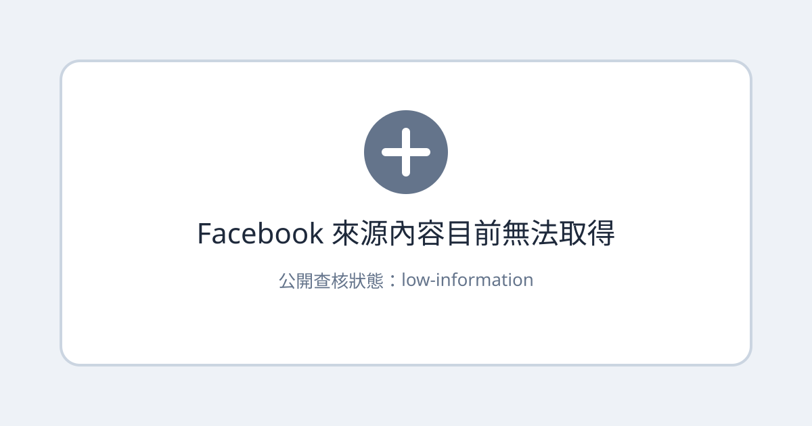

擷取結果
目前可見資訊
- 分享 URL：
https://www.facebook.com/share/p/1Bq9XugUqJ/?mibextid=wwXIfr - 瀏覽器解析結果：Facebook 導向登入頁。
- 解析出的目標：
story.php?story_fbid=28404907259101663&id=100000273051128。 - 一般 Facebook、
m.facebook.com與mbasic.facebook.com均回傳登入頁。 - 登入頁沒有提供原貼文的 OG title、OG description、OG image 或正文。
無法確認
- 作者或粉絲專頁名稱
- 貼文絕對日期
- 貼文文字與語言
- 圖片、影片或附件
- 貼文是否公開、限朋友、社團限定或其他權限
- 可供查核的技術、商業或產品主張
隱私與證據限制
本文設為 visibility: public，但只公開「目前無法取得內容」這項擷取結果，不公開登入頁 HTML，也不推測原貼文內容。實際取得的登入頁 HTML 保存在：
/opt/data/user-notes/knowledge-base/source-archive/private/2026-08-07-facebook-share-1bq9xuguqj-login.html
該 HTML 只證明目前擷取環境被要求登入，不證明原始貼文內容，也不應部署到公開網站。
來源證據
- Facebook 分享 URL：
https://www.facebook.com/share/p/1Bq9XugUqJ/?mibextid=wwXIfr - 解析出的 canonical：
https://www.facebook.com/story.php?story_fbid=28404907259101663&id=100000273051128 - 擷取結果：一般 Facebook、mobile 與 mbasic 入口均導向登入頁。
- 原始登入頁 HTML：
/opt/data/user-notes/knowledge-base/source-archive/private/2026-08-07-facebook-share-1bq9xuguqj-login.html - 公開封面：僅表示內容目前無法取得，不是原貼文截圖。
可見資訊
目前只能確認分享 URL 導向一個 Facebook story.php 來源；無法從未登入頁面取得原貼文正文、圖片或影片。
資訊查核
| 主張 | 結果 | 證據與限制 |
|---|---|---|
| 分享 URL 可解析到 Facebook story.php | 已確認 | 瀏覽器與多個 Facebook 入口均導向同一類型登入頁。 |
| 可確認原貼文主題 | 無法確認 | 未取得正文、OG description 或媒體。 |
| 原貼文是公開內容 | 無法確認 | 目前頁面要求登入，且未能判定朋友限定、社團限定或其他權限。 |